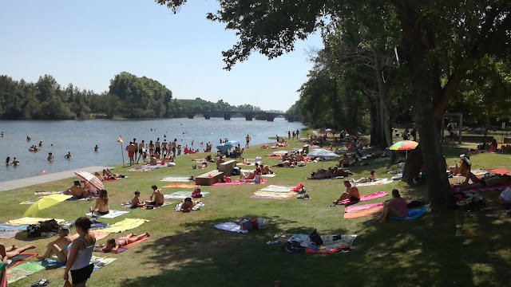

Destaques
Praia Fluvial do Faial (Vila de Prado)
A praia fluvial do Faial é uma das mais concorridas, procurada por milhares de pessoas da região e arredores. Situada na margem direita do Rio Cávado, no final da Av. do Cávado, na Vila do Prado, mesmo antes da Ponte do Prado. Uma área verde para estender a toalha e com excelentes condições ao seu redor para momentos de convívio e lazer. Uma praia espetacular com relva bem tratada e água límpida.
Complexo de Lazer e Piscinas de Vila Verde
Sobre Vila Verde
Vila Verde é uma vila portuguesa localizada na sub-região do Cávado, pertencendo à região do Norte e ao distrito de Braga.
É sede do Município de Vila Verde que tem uma área total de 228,67 km², 46.444 habitantes em 2021 e uma densidade populacional de 203 habitantes por km², subdividido em 33 freguesias. O município é limitado a norte pelo município de Ponte da Barca, a leste por Terras de Bouro, a sudeste por Amares, a sul por Braga, a oeste por Barcelos e a noroeste por Ponte de Lima.